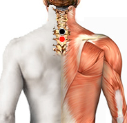

Tenosinovitis
Par
dorsal 1 - cervical 7

Generalidades:
Tenosinovitis es la inflamación de la vaina que cubre un tendón que puede deberse a diversas causas; la más frecuente es infección causada por alguna cortadura o punción. También puede deberse a alguna enfermedad que cause inflamación, o bien, a exceso de tensión o sobrecarga (esfuerzo físico) ocasionando dolor, dificultad de movimiento o fiebre. Las artículaciones más afectadas pueden ser muñecas o tobillos.